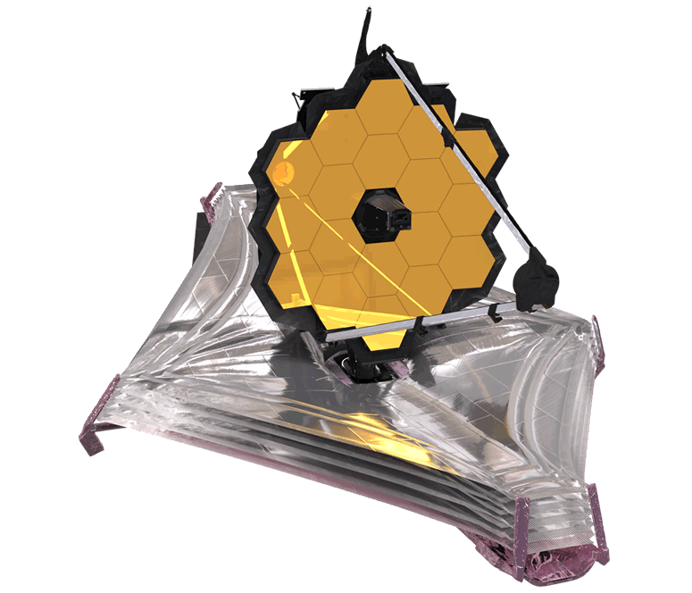

The James Webb Space Telescope (JWST) is a space telescope currently conducting infrared astronomy. As the largest optical telescope in space, it is equipped with high-resolution and high-sensitivity instruments, allowing it to view objects too old, distant, or faint for the Hubble Space Telescope.